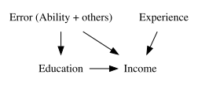
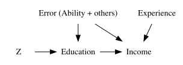
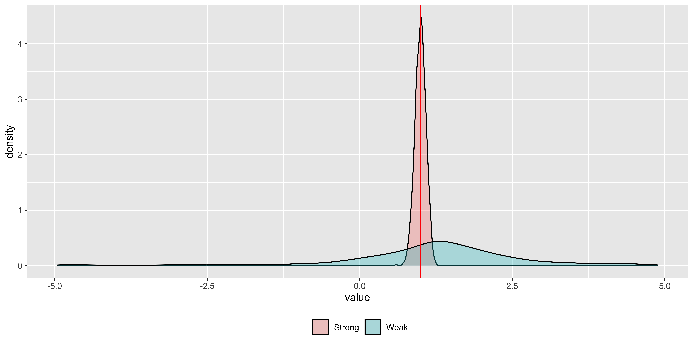

Endogeneity
\(E[u|x_k] \ne 0\) (the error term is not correlated with any of the independent variables)
Endogenous independent variable
If the error term is, .red[for whatever reason], correlated with the independent variable \(x_k\), then we say that \(x_k\) is an endogenous independent variable.
You want to estimate the causal impact of education on income.
Causal diagram

We want to find a variable like \(Z\) in the diagram below:

The Model
\(y=\beta_0 + \beta_1 x_1 + \beta_2 x_2 + u\)
Idea (very loosely put)
Bring in variable(s) ( Instrumental variable(s) ) that does NOT belong to the model, but IS related with the endogenous variable,
Using the instrumental variable(s) (which we denote by \(Z\)), make the endogenous variable exogenous, which we call .blue[instrumented] variable(s)
Use the variation in the instrumented variable instead of the original endogenous variable to estimate the impact of the original variable
Idea
Using the instrumental variables, make the endogenous variable exogenous, which we call instrumented variable.
Step 1: mathematically
\(x_1 = \alpha_0 + \sigma_2 x_2 + \alpha_1 z_1 +\alpha_2 z_2 + v\)
\(\widehat{x}_1 = \widehat{\alpha}_0 + \widehat{\sigma}_2 x_2 + \widehat{\alpha}_1 z_1 + \widehat{\alpha}_2 z_2\)
Idea
Use the variation in the instrumented variable instead of the original endogenous variable to estimate the impact of the original variable
Step 2: Mathematically
Regress the dependent variable \((y)\) on the instrumented variable \((\widehat{x}_1)\),
\(y= \beta_0 + \beta_1 \widehat{x}_1+ \beta_2 x_2 + \varepsilon\)
to estimate the coefficient on \(x\) in the original model
Model
\(log(wage) = \beta_0 + \beta_1 educ + \beta_2 exper + (\beta_3 ability + v)\)
Instruments (Z)
Suppose you selected the following variables as instruments:
Regress \(educ\) on \(exper\), \(IQ\), and \(sibs\):
\[\begin{align*} educ = \alpha_0 + \alpha_1 exper + \alpha_2 IQ + \alpha_3 sibs + u \end{align*}\]Use the coefficient estimates on \(\alpha_0\), \(\alpha_1\), \(\alpha_2\), and \(\alpha_3\) to predict \(educ\) as a function of \(exper\), \(IQ\), and \(sibs\).
\[\begin{align*} \widehat{educ} = \widehat{\alpha_0} + \widehat{\alpha_1} exper + \widehat{\alpha_2} IQ + \widehat{\alpha_3} sibs \end{align*}\]Use \(\widehat{educ}\) in place of \(educ\) to estimate the model of interest:
\[\begin{align*} log(wage) = \beta_0 + \beta_1 \widehat{educ} + \beta_2 exper + u \end{align*}\]Just like OLS needs to satisy some conditions for it to consistently estimate the coefficients, IV approach needs to satisy some conditions for it to work.
Estimation Procedure
Step 1: \(\widehat{x}_1 = \widehat{\alpha}_0 +\widehat{\sigma}_2 x_2 + \widehat{\alpha}_1 z_1 + \widehat{\alpha}_2 z_2\)
Step 2: \(y = \beta_0 + \beta_1 \widehat{x}_1+ \beta_2 x_2 + \varepsilon\)
Important question
What are the conditions under which IV estimation is consistent?
The instruments \((Z)\) need to satisfy two conditions, which we will discuss.
Estimation Procedure
Step 1: \(\widehat{x}_1 = \widehat{\alpha}_0 +\widehat{\sigma}_2 x_2 + \widehat{\alpha}_1 z_1 + \widehat{\alpha}_2 z_2\)
Step 2: \(y = \beta_0 + \beta_1 \widehat{x}_1+ \beta_2 x_2 + \varepsilon\)
Question
What happens if \(Z\) have no power to explain \(x_1\) \((\alpha_1=0\) and \(\alpha_2=0)\)?
That is, \(\widehat{x}_1\) has no information beyond the information \(x_2\) possesses.
The instrument(s) \(Z\) have jointly significant explanatory power on the endogenous variable \(x_1\) .red[after] you control for all the other exogenous variables (here \(x_2\))Model of interest
\(y = \beta_0 + \beta_1 x_1 + \beta_2 x_2 + u\)
Estimation Procedure
Step 1: \(\widehat{x}_1 = \widehat{\alpha}_0 +\widehat{\sigma}_2 x_2 + \widehat{\alpha}_1 z_1 + \widehat{\alpha}_2 z_2\)
Step 2: \(y = \beta_0 + \beta_1 \widehat{x}_1+ \beta_2 x_2 + \varepsilon\)
Remember you can break \(x_1\) into the predicted part and the residuals.
\[\begin{align*} x_1 = \widehat{x}_1 + \widehat{\varepsilon} \end{align*}\]where \(\widehat{\varepsilon}\) is the residual of the first stage estimation.
Plugging in \(x_1 = \widehat{x}_1 + \widehat{\varepsilon}\) into the model of interest,
\[\begin{align*} y & = \beta_0 + \beta_1 (\widehat{x}_1 + \widehat{\varepsilon}) + \beta_2 x_2+ u\\ & = \beta_0 + \beta_1 \widehat{x}_1 + \beta_2 x_2+ (\beta_1\widehat{\varepsilon} + u) \end{align*}\]So, if you regress \(y\) on \(\widehat{x}_1\) and \(x_2\), then the error term is \((\beta_1\widehat{\varepsilon} + u)\).
Question
What is the condition under which the OLS estimation of \(\beta_1\) in the main model is unbiased?
We confirmed that we need the following condition to be satisfied:
Note
\(\widehat{x}_1\) is not correlated with \((\beta_1\widehat{\varepsilon} + u)\)
This in turn means that \(x_2\), \(z_1\), and \(z_2\) are not correlated with \(u\) (the error term of the true model.)
\((\widehat{x}_1\) is always not correlated (orthogonal) with \(\varepsilon)\)
Condition 2
\(z_1\) and \(z_2\) do not belong in the main model, meaning they do not have any explanatory power beyond \(x_2\) (they should have been included in the model in the first place as independent variables)
\(z_1\) and \(z_2\) are not correlated with the error term (there are no unobserved factors in the error term that are correlated with \(Z\))
Question
Do you think we can test condition 2?
Important
All we can do is to argue that the instruments are not correlated with the error term.
In journal articles that use IV method, they make careful arguments as to why their choice of instruments are not correlated with the error term.
Condition 1
Condition 2
\(z_1\) and \(z_2\) do not belong in the main model, meaning they do not have any explanatory power beyond \(x_2\) (they should have been included in the model in the first place as independent variables)
\(z_1\) and \(z_2\) are not correlated with the error term (there are no unobserved factors in the error term that are correlated with \(Z)\)
Important
Condition 1 is always testable
Condition 2 is NOT testable (unless you have more instruments than endogenous variables)
IV estimator is also called two-stage least squares estimator (2SLS) because it involves two stages of OLS.
Step 1: \(\widehat{x}_1 = \widehat{\alpha}_0 +\widehat{\sigma}_2 x_2 + \widehat{\alpha}_1 z_1 + \widehat{\alpha}_2 z_2\)
Step 2: \(y = \beta_0 + \beta_1 \widehat{x}_1+ \beta_2 x_2 + \varepsilon\)
2SLS framework is a good way to understand conceptually why and how instrumental variable estimation works. But, IV estimation is done in one-step
The model
\(log(wage) = \beta_0 + \beta_1 educ + \beta_2 exper + v \;\; ( = \beta_3 ability + u)\)
educ is endogenous because of its correlation with ability.
Question
What conditions would a good instrument \((z)\) satisfy?
\(z\) has explanatory power on \(educ\) .blue[after] you control for the impact of \(epxer\) on \(educ\)
\(z\) is uncorrelated with \(v\) (\(ability\) and all the other important unobservables)
The model
\(log(wage) = \beta_0 + \beta_1 educ + \beta_2 exper + v \;\; ( = \beta_3 ability + u)\)
Instrument
The last digit of an individual’s Social Security Number? (this has been actually used in some journal articles)
Question
Is it uncorrelated with \(v\) (\(ability\) and all the other important unobservables)?
does it have explanatory power on \(educ\) .blue[after] you control for the impact of \(epxer\) on \(educ\)?
The model
\(log(wage) = \beta_0 + \beta_1 educ + \beta_2 exper + v \;\; ( = \beta_3 ability + u)\)
Instrument
IQ test score
Question
Is it uncorrelated with \(v\) (\(ability\) and all the other important unobservables)?
does it have explanatory power on \(educ\) .blue[after] you control for the impact of \(epxer\) on \(educ\)?
The model
\(log(wage) = \beta_0 + \beta_1 educ + \beta_2 exper + v \;\; ( = \beta_3 ability + u)\)
Instrument
Mother’s education
Question
Is it uncorrelated with \(v\) (\(ability\) and all the other important unobservables)?
does it have explanatory power on \(educ\) .blue[after] you control for the impact of \(epxer\) on \(educ\)?
The model
\(log(wage) = \beta_0 + \beta_1 educ + \beta_2 exper + v \;\; ( = \beta_3 ability + u)\)
Instrument
Number of siblings
Question
Is it uncorrelated with \(v\) (\(ability\) and all the other important unobservables)?
does it have explanatory power on \(educ\) .blue[after] you control for the impact of \(epxer\) on \(educ\)?
Model
\(log(wage) = \beta_0 + \beta_1 educ + \beta_2 exper + v \;\; (=\beta_3 ability + u)\)
We believe
\(educ\) is endogenous \((x_1)\)
\(exper\) is exogenous \((x_2)\)
we use the number of siblings \((sibs)\) and father’s education \((feduc)\) as the instruments (\(Z\))
Terminology
exogenous variable included in the model (here, \(exper\)) is also called .blue[included instruments]
instruments that do not belong to the main model (here, \(sibs\) and \(feduc\)) are also called .blue[excluded instruments]
we refer to the collection of included and excluded instruments as .blue[instruments]
We can continue to use the fixest package to run IV estimation method.
Syntax
included instruments: exogenous included variables (do not include endogenous variables here)first stage formula
Example
included variable:
expereducinstruments:
expersibs and feducIV regression results
Note
When variable x is the endogenous variable, fixest changes the name of x to x(fit).
Here, educ has become educ(fit).
Comparison of OLS and IV Estimation Results
| (1) | (2) | |
|---|---|---|
| (Intercept) | 5.503*** | 4.507*** |
| (0.112) | (0.316) | |
| educ | 0.078*** | |
| (0.007) | ||
| exper | 0.020*** | 0.037*** |
| (0.003) | (0.006) | |
| fit_educ | 0.137*** | |
| (0.019) | ||
| Num.Obs. | 935 | 741 |
| R2 | 0.131 | 0.053 |
| RMSE | 0.39 | 0.41 |
| Std.Errors | IID | IID |
| + p < 0.1, * p < 0.05, ** p < 0.01, *** p < 0.001 |
Question
Do you think \(sibs\) and \(feduc\) are good instruments?
You can include fixed effects in your IV estimation.
Syntax
Example
Include married and south as fixed effects.
TSLS estimation, Dep. Var.: log(wage), Endo.: educ, Instr.: feduc, sibs
Second stage: Dep. Var.: log(wage)
Observations: 741
Fixed-effects: married: 2, south: 2
Standard-errors: Clustered (married)
Estimate Std. Error t value Pr(>|t|)
fit_educ 0.124355 0.003627 34.2906 0.018560 *
exper 0.032128 0.002260 14.2144 0.044713 *
---
Signif. codes: 0 '***' 0.001 '**' 0.01 '*' 0.05 '.' 0.1 ' ' 1
RMSE: 0.391178 Adj. R2: 0.116588
Within R2: 0.069595
F-test (1st stage), educ: stat = 62.0 , p < 2.2e-16 , on 2 and 736 DoF.
Wu-Hausman: stat = 8.98498 , p = 0.002814, on 1 and 735 DoF.
Sargan: stat = 0.169226, p = 0.6808 , on 1 DoF.You can just add cluster = option just like we previously did.
fixest::feols(log(wage) ~ exper | married + south | educ ~ feduc + sibs, cluster = ~black, data = wage2)TSLS estimation, Dep. Var.: log(wage), Endo.: educ, Instr.: feduc, sibs
Second stage: Dep. Var.: log(wage)
Observations: 741
Fixed-effects: married: 2, south: 2
Standard-errors: Clustered (black)
Estimate Std. Error t value Pr(>|t|)
fit_educ 0.124355 0.005258 23.6526 0.026899 *
exper 0.032128 0.002798 11.4842 0.055295 .
---
Signif. codes: 0 '***' 0.001 '**' 0.01 '*' 0.05 '.' 0.1 ' ' 1
RMSE: 0.391178 Adj. R2: 0.116588
Within R2: 0.069595
F-test (1st stage), educ: stat = 61.9 , p < 2.2e-16 , on 2 and 735 DoF.
Wu-Hausman: stat = 8.98498 , p = 0.002814, on 1 and 735 DoF.
Sargan: stat = 0.169226, p = 0.6808 , on 1 DoF.Definition: weak instrument
The external instrument(s) does not have enough explanatory power on the instrumented (endogenous) variabl beyond the other controls.
Important
We can always test if the excluded instruments are weak or not!
Run the 1st stage regression
\[\begin{align*} educ = \alpha_0 + \alpha_1 exper + \alpha_2 sibs + \alpha_3 feduc + v \end{align*}\]Then, test the joint significance of \(\alpha_2\) and \(\alpha_3\) (\(F\)-test)
If excluded instruments \((sibs\) and \(feduc\), here) are jointly significant, then it would mean that \(sibs\) and \(feduc\) are not weak instruments, satisfying condition 1.
When we ran the IV estimation using fixest::feols() earlier, it automatically calculated the F-statistic for the weak instrument test.
Here, F-test for the null hypothesis of the excluded instruments (sibs and feduc) do not have any explanatory power on the endogenous variable (educ) beyond the included instrument (exper) is rejected.
You can access the iv_first_stage component of the regression results.
Note
It is generally recommended that you have \(F\)-stat of over \(10\) (this is not a clear-cut criteria that applied to all the empirical cases)
Even if you reject the null if \(F\)-stat is small, you may have a problem
You know nothing about if your excluded instruments satisfy Condition 2.
If you cannot reject the null, it is a strong indication that your instruments are weak. Look for other instruments.
Always, always report this test. There is no reason not to.
Data generation
Correlation
Estimation with the strong instrumental variable
Estimation with the weak instrumental variable
Question
Any notable differences?
diagnostics (strong instrument)
diagnostics (weak instrument)
Note
You cannot reject the null hypothesis of weak instrument in the weak instrument case.
set.seed(238354)
B <- 1000 # the number of experiments
N <- 500 # number of observations
beta_hat_store <- matrix(0, B, 2) # storage of beta hat
for (i in 1:B) {
#--- data generation ---#
u_common <- runif(N)
z_common <- runif(N)
x_end <- u_common + z_common + runif(N)
z_strong <- z_common + runif(N)
z_weak <- 0.01 * z_common + 0.99995 * runif(N)
u <- u_common + runif(N)
y <- x_end + u
data <- data.table(y, x_end, z_strong, z_weak)
#--- IV estimation with a strong instrument ---#
iv_strong <- fixest::feols(y ~ 1 | x_end ~ z_strong, data = data)
beta_hat_store[i, 1] <- iv_strong$coefficients[2]
#--- IV estimation with a weak instrument ---#
iv_weak <- fixest::feols(y ~ 1 | x_end ~ z_weak, data = data)
beta_hat_store[i, 2] <- iv_weak$coefficients[2]
}melted <- melt(data.table(beta_hat_store))
melted[variable == "V1", variable := "Strong"]
melted[variable == "V2", variable := "Weak"]
ggplot(data = melted[abs(value) < 5, ]) +
geom_density(aes(x = value, fill = variable), alpha = 0.3) +
geom_vline(xintercept = 1, color = "red") +
scale_fill_discrete(name = "") +
theme(
legend.position = "bottom"
)
Flow
Identify endogenous variable(s) and included instrument(s)
Identify potential excluded instrument(s)
Argue why the excluded instrument(s) you pick is uncorrelated with the error term (condition 2)
Once you decide what variable(s) to use as excluded instruments, .red[test] whether the excluded instrument(s) is weak or not ( condition 1)
Implement IV estimation and report the results